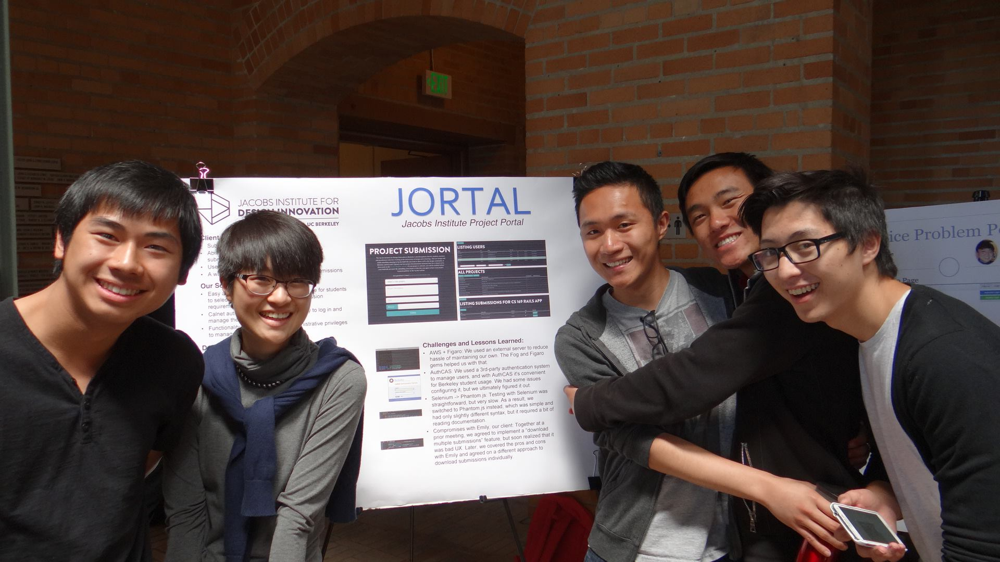

Because this is designed for this website, please click here if you want a printable version of my resume. (Please note that there are some differences in what is included.)
Otherwise, feel free to navigate through the different sections of my resume. For contact information, please head back to Professional Life.

Here is a listing of languages I know, have worked with, and dabbled with.
| Front-end | Back-end |
|---|---|
| HTML | Python |
| CSS | Java |
| Javascript/JQuery | C |
| PHP | MIPS |
| RoR | Ida (specifically in this project) | MySQL |
This is a game I made with Austin Shyu, Calvin Lu, and Tracy Lee for QGCon 2014.
Responsibilities:
Story-writing, GUI design and layout, scheduling, goal-setting, managing the repository, writing up the readme, and presenting at QGCon 2014.
Game Overview:
Our game is a slice-of-life visual novel with the player experiencing daily struggles through the lens of a queer student. As you navigate through the challenges in life and school, you'll find yourself in battle with metaphorical monsters and fight with challenge-specific attacks to overcome the obstacle in your day. Plan your attacks wisely to maximize your happiness and well-being, but don't forget about your grades, too!
Play online here.
Download the game here.
Watch the presentation given by the student workshop groups here. (I presented for my group.)
This is a game I made with Albert Hu, Terry Tsai, Jack Chou, Kenneth Lam, and Arlan Jaska for CS169.
Work Done:
Planned and designed an online interface for professors to define submission requirements and for students to submit final projects for display purposes
Met biweekly with a non-technical client from the UC Berkeley Jacobs Institute to refine user stories and follow Agile development procedures
Implemented models to organize projects, users, submissions, and requirements RESTfully
See the website here. (Only works if you have a CalNet username and passphrase.)